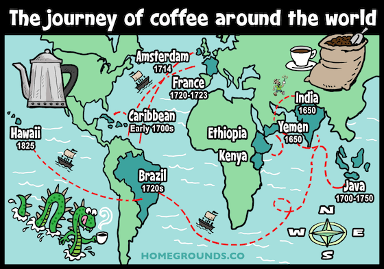

The History Of Coffee In The World
Về lịch sử, đến thế kỷ thứ 18, những người Hà Lan đầu tiên đã mang được cà phê ra ngoài lãnh thổ Ai Cập và đến trồng ở xứ Martinique. Sau đó người Pháp và Brazil cũng mang được loại quả này về quê hương của mình. Đó là bước đầu để cây cà phê được trồng ở khắp nơi trên thế giới.
History Of Coffee In VietNam

Năm 1857, người Pháp đã mang giống cafe Chè (Arabica) từ Bourbon sang trồng ở các tỉnh phía Bắc và miền Trung như Xuân Mai, Sơn Tây, Quảng trị, Bố Trạch,… Tuy nhiên năng suất của cây cà phê ở những vùng này rất thấp, chỉ khoảng 400 – 500 kg/1 hecta. Sau đó họ đã mang hạt cafe giống đi trồng ở rất nhiều nơi, lập các đồn điền ở các tỉnh miền Nam và Tây Nguyên.
Bên cạnh đó, các loại cà phê mới như Robusta (cà phê Vối), Mitcharichia (cà phê Mít) cũng được đem đi trồng thử nghiệm. Từ đó cafe trở thành loại cây công nghiệp phổ biến nhất ở Việt Nam.

Coffees
Arabica thuộc họ Rubiaceae, chi Coffea, tiếng Việt được gọi là cà phê Chè do đặc điểm của nó là lá nhỏ, thân cây thấp giống như cây chè ở Việt Nam. Arabica có nguồn gốc từ Tây Nam Ethiopia. Sau đó theo chân người Pháp đến Việt Nam. Đây chính là loại cafe được trồng đầu tiên ở nước ta.
Trong họ cafe, Arabica có rất nhiều giống khác nhau và hầu như chúng đều là những loại cà phê hảo hạng nhất. Có thể kể đến một số cái tên như: Typica, Bourbon, Caturra, Catuai, Catimor, Moka.
Dòng cafe Arabica chỉ thích hợp ở độ cao phù hợp, tuy có sản lượng thấp nhưng cho hương thơm đặc biệt.
Có đến 39% sản lượng cafe trên thế giới là thuộc dòng Robusta. Thân cây của Robusta cao hơn, nhiều nhánh và lá cây to hơn so với Arabica.
Hương vị của Robusta không được đánh giá cao bằng Arabica. Tuy nhiên, đặc điểm nổi bật của giống cafe này chính là hàm lượng caffeine rất cao, chiếm khoảng 2 – 4% hạt cafe trong khi Arabica chỉ có 1 – 2,5%.
Robusta có khả năng kháng bệnh tốt, cho năng suất cao, đặc biệt có hàm lượng cafein cao hơn Arabica.
Cherry hay còn gọi là cà phê Chari, cà phê Mít có nguồn gốc từ Ubangui Chari, gần sa mạc lớn nhất thế giới Sahara. Chính vì vậy loại cây này có đặc điểm khá cao lớn, thân và lá to để chứa nước và có thể sinh trường tốt ở những nơi thời tiết khô hạn.
Quả của Chari to hơn những giống khác tuy nhiên năng suất lại không cao. Về mùi vị thì nó cũng không được đánh giá cao bằng Arabica hay Robusta nên ngày nay được trồng rất ít ở nước ta.
Ngoài các giống cà phê kể trên, trên thị trường còn nhắc nhiều đến dòng Culi đột biến, mang cả hương vị của cafe Arabica và Robusta.